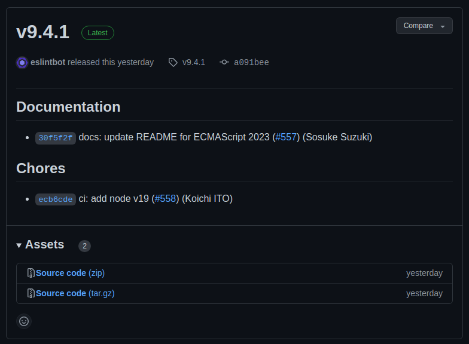
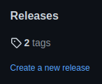
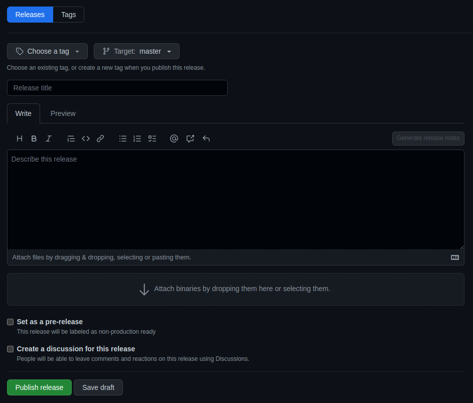

Lanzamientos de GitHub
Los lanzamientos son una característica muy útil de GitHub. Sirven para representar distintas versiones de un producto de software, ya sea porque vamos a publicarla o bien porque representa un determinado momento en el tiempo como, por ejemplo, el final de un sprint o el alcance de un hito.
Al finalizar, sabrá:
-
Qué es un lanzamiento de GitHub.
-
Qué son las notas de lanzamiento y cómo crearlas.
-
Cómo crear un lanzamiento.
-
Qué comando utilizar para automatizar la creación de un lanzamiento.
-
Cómo utilizar el evento release para disparar otros flujos de trabajo.
Introducción
GitHub proporciona los lanzamientos (releases), donde un lanzamiento (release) representa una determinada versión del software con sus artefactos correspondientes y unas notas de lanzamiento. La idea es generar unos archivos con el contenido del software y unas notas de lanzamiento. He aquí un ejemplo, extraído del proyecto ESLint:

Básicamente, un lanzamiento contiene una colección de archivos, conocidos formalmente como activos (assets) o artefactos (artifacts) y las notas de lanzamiento.
Un borrador de lanzamiento (release draft) es un boceto previo de un lanzamiento. Además, también tenemos los prelanzamientos (prereleases), que representan versiones previas a una de producción como, por ejemplo, una beta.
Notas de lanzamiento
Las notas del lanzamiento (release notes) no son más que una descripción de los cambios implementados en el lanzamiento. Es un texto que describe los cambios realizados, el cual podemos pedirle a GitHub que lo genere a partir de las solicitudes de integración. Además, pueden listar los colaboradores que han participado en las solicitudes integradas en el lanzamiento.
El texto de las notas de lanzamiento se agrupa o presenta en categorías, donde una categoría (category) no es más que una colección de cambios relacionados con alguna cosa. Los títulos de las solicitudes de integración relacionadas con una determinada categoría, se agrupan en una misma sección de las notas de lanzamiento.
Archivo de configuración .github/release.yaml
GitHub permite configurar las notas de lanzamiento mediante el archivo .github/release.yaml del repositorio. Por un lado, indica las categorías, y el orden en el que se presentarán, que debe generar y qué utilizar para considerar que una solicitud de integración pertenece a esa categoría. Por otra parte, permite indicar exclusiones a tener en cuenta, o sea, fijar qué solicitudes de integración no tener en cuenta en la generación de las notas de lanzamiento como, por ejemplo, aquellas que tengan una determinada etiqueta.
Es importante que tenga claro que la generación automática de las notas de lanzamiento se genera a partir de las solicitudes de integración. Recorre todas las solicitudes con determinadas etiquetas y extrae de sus descripciones los cambios realizados y quién los llevó a cabo. A partir de las etiquetas, se decide la categoría a la que se llevará la descripción.
Lo que hace el archivo .github/release.yaml es determinar las categorías a presentar y fijar excepciones, es decir, indicar qué etiquetas, que en caso de aparecer en una solicitud de integración, indicarán que no se tenga en cuenta en la generación de las notas. También permite indicar qué colaboradores no se deben tener en cuenta.
Veamos un ejemplo ilustrativo para, a continuación, describir sus distintas propiedades:
changelog:
exclude:
labels:
- ignore-for-release
authors:
- octocat
categories:
- title: Breaking Changes
labels:
- Semver-Major
- breaking-change
- title: Exciting New Features
labels:
- Semver-Minor
- enhancement
- title: Other Changes
labels:
- "*"
Propiedad changelog.exclude del archivo release.yaml
La propiedad changelog.exclude sirve para configurar ciertas etiquetas y autores que en caso de aparecer en una PR harán que no se tenga en cuenta en la generación de las notas de lanzamiento. En el ejemplo anterior, se excluyen las solicitudes de integración que tengan la etiqueta ignore-for-release y las generadas por el autor octocat.
Propiedad changelog.categories del archivo release.yaml
Mediante la propiedad changelog.categories fijamos las distintas categorías en las que se debe presentar las notas de lanzamiento. Consiste en una lista, donde cada elemento representa una categoría cuyas propiedades de configuración son las siguientes:
| Propiedad | Descripción |
|---|---|
| title | Título de la categoría. |
| labels | Etiquetas que en caso de aparecer en una solicitud de integración harán que sus notas se asocien a la categoría. |
Como valor de la propiedad labels podemos indicar el comodín asterisco (*).
Con él, indicamos todas las etiquetas.
En ocasiones, en esta situación, podemos desear indicar que se excluya ciertas etiquetas.
En este caso, lo haremos con la propiedad exclude.labels del elemento categoría, la cual indica qué etiquetas no se deben considerar cuando estemos ante *.
También es posible indicar que se excluyan las solicitudes de integración que cumplan los requisitos indicados por labels de ciertos autores. Esto lo indicaremos mediante la propiedad exclude.authors de la categoría.
Creación de lanzamientos
Una vez tenemos claro lo que contiene un lanzamiento, veamos cómo crearlos. En primer lugar, lo haremos manualmente para, a continuación, ver qué comando podemos utilizar en un flujo de trabajo para automatizarlo. Es importante que antes de crear el lanzamiento haya generado la etiqueta en el Git. Asumiremos que ya hemos creado una etiqueta en el repositorio Git como, por ejemplo, v1.2.3.
Creación manual de un lanzamiento mediante GitHub
La mejor manera de crear un lanzamiento manualmente es mediante la web de GitHub:
-
Ir a https://github.com.
-
Ir al repositorio en cuestión.
-
Hacer clic en Create a new release en la sección Releases que aparece en el lateral derecho de la pestaña Code del repositorio:

-
Rellenar el formulario que aparece:

Seleccione la etiqueta de la versión a publicar en Choose a tag. A continuación, fije el título del lanzamiento en la caja de texto en la que aparece Release title. Si está creando un prelanzamiento, seleccione Set as a pre-release.
-
Establecer las notas del lanzamiento.
Puede indicar el texto concreto de las notas o bien pedirle a GitHub que lo genere.
Para la generación automática de las notas, haga clic en Generate release notes y GitHub generará y añadirá las notas al cuadro de notas. Para que este botón esté disponible, es necesario que haya seleccionado ya la etiqueta en Choose a tag. En Previous tag, puede indicar la etiqueta de inicio en la que comenzar a considerar solicitudes de integración. Si deja auto, lo decidirá GitHub; pero si lo desea, puede fijar explícitamente la etiqueta de la versión anterior.
Recuerde que si solicita esta generación automática, GitHub utilizará los títulos de las solicitudes de integración. Las notas así generadas las puede modificar si es necesario.
-
Hacer clic en Publish release para crear y publicar el lanzamiento. En caso de borrador, hacer clic en Save draft.
Creación automática de un lanzamiento mediante gh release
Recordemos que el comando gh está disponible en los flujos de trabajo de GitHub Actions y, por lo tanto, podemos invocarlo en cualquier paso de shell. Concretamente, podemos utilizar el comando gh release para trabajar con lanzamientos. Este comando dispone de varios subcomandos que podemos utilizar para automatizar la generación de lanzamientos. Puede consultar los disponibles mediante:
gh help release
Para crear un lanzamiento, podemos usar el comando gh release create. Este comando necesita saber la etiqueta del repositorio para la que debe crear el lanzamiento. Sus sintaxis básicas son las siguientes:
# Crea un lanzamiento para la etiqueta indicada
# generando las notas automáticamente
gh release create etiquetaGit --generate-notes
# Crea un lanzamiento para la etiqueta indicada
# usando como notas de lanzamiento el texto indicado
gh release create etiquetaGit --notes "notas de lanzamiento"
# Crea un lanzamiento para la etiqueta indicada
# usando como notas de lanzamiento el contenido
# del archivo indicado
gh release create etiquetaGit --notes-file archivo.txt
Si necesitamos fijar el título del lanzamiento, podemos utilizar la opción --title o -t.
Y si estamos ante un prelanzamiento, deberemos indicar la opción --prerelease.
Si indicamos la opción --generate-notes, podemos indicar la etiqueta de inicio mediante --notes-start-tag.
A continuación, se muestra un ejemplo de un flujo de lanzamiento usado para generar la versión en PDF de este libro:
name: Release
on:
workflow_dispatch:
inputs:
version:
description: Version to release
type: string
required: true
pubDate:
description: Pub date
type: string
required: false
fileName:
description: Book file name
type: string
default: devops-con-github-actions
required: false
jobs:
build:
runs-on: ubuntu-22.04
steps:
- name: Clone repo
uses: actions/checkout@v3
- name: Set Git metadata
run: |
git config --local user.name ${{ github.actor }}
git config --local user.email ${{ github.actor }}@users.noreply.github.com
- name: Install Pandoc
uses: siacodelabs/setup-pandoc@v1
with:
xelatex: true
- name: Install locale ES
run: sudo apt install -y language-pack-es
- name: Set version variable
run: |
# (1) set variable value
version=${{ inputs.version }}
if [[ $version != v* ]]; then
version=v$version
fi
# (2) export variable
echo "version=$version" >> $GITHUB_ENV
- name: Set pub date variable
run: |
# (1) set variable value
pubDate="${{ inputs.pubDate }}"
if [[ -z $pubDate ]]; then
pubDate=$(LC_TIME=es_ES.utf8 date "+%-d de %B de %Y")
fi
# (2) export variable
echo "pubDate=$pubDate" >> $GITHUB_ENV
- name: Build PDF book
run: ./release.sh "${{ inputs.fileName }}" "$pubDate"
- name: Create and push version tag
run: |
git tag -a $version -m "Release: $version"
git push origin --tags
- name: Publish release
env:
GITHUB_TOKEN: ${{ secrets.GITHUB_TOKEN }}
run: |
filePath=dist/pdf/${{ inputs.fileName }}.pdf
gh release create $version -t "Release: $version"
gh release upload $version $filePath
No olvide indicar el token de autenticación que se debe utilizar en la variable de entorno GITHUB_TOKEN, tal y como muestra el ejemplo anterior. Si no lo hace, recibirá un error.
El comando gh release create genera automáticamente varios artefactos, más concretamente unos archivos comprimidos, con el contenido del repositorio. Adicionalmente, se adjunta un artefacto, el archivo PDF generado, al lanzamiento mediante el comando gh release upload. Este comando presenta la siguiente sintaxis:
gh release upload etiquetaGit archivo
Le puede resultar muy útil conocerlo para determinados flujos que generan artefactos, los cuales deben adjuntarse explícitamente al lanzamiento.
Evento release
GitHub Actions proporciona el evento release, el cual genera automáticamente en determinados momentos de los lanzamientos. Así, por ejemplo, cuando se genera un nuevo lanzamiento, podemos generar un tuit o enviar un mensaje a un grupo de Telegram o a una colección de direcciones.
Este evento dispone de una propiedad types con la que podemos afinar el evento en el que estamos interesados. Consiste en una lista cuyos posibles valores son:
| Valor | Descripción |
|---|---|
| created | Creación de un lanzamiento. |
| edited | Modificación de un lanzamiento. |
| released | Publicación del borrador de un lanzamiento. |
| prereleased | Publicación de un prelanzamiento. |
| published | Publicación de un lanzamiento. |
| unpublished | Supresión de la publicación de un lanzamiento. |
| deleted | Supresión de un lanzamiento. |
He aquí un ejemplo ilustrativo:
on:
release:
types: [published]
Algunas organizaciones utilizan el flujo de lanzamiento para generar una nueva versión y, en el caso de Node.js, también publicarla en un registro como NPM. Posiblemente, sea mejor utilizar el flujo de lanzamiento para generar la nueva versión y, por otro lado, un segundo flujo para realizar su publicación. A este nuevo flujo, se le conoce formalmente como flujo de publicación (publish workflow) o flujo de entrega (delivery workflow). Podemos utilizar el evento release como su disparador.